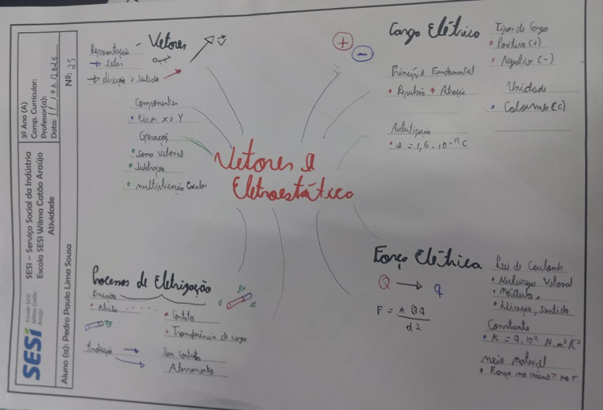
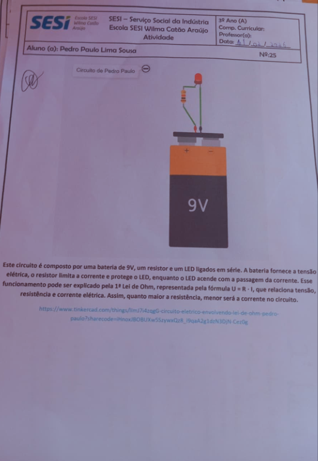
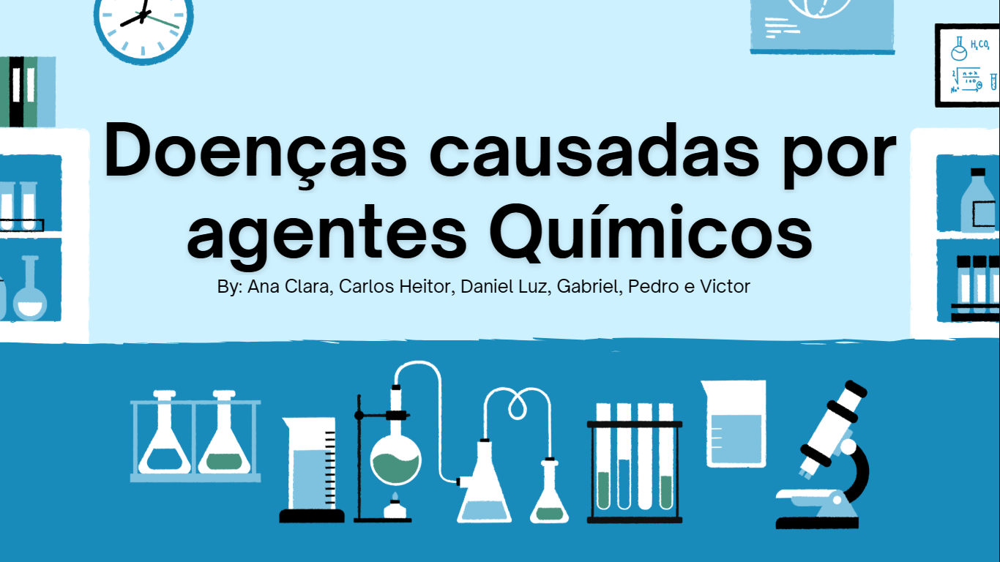
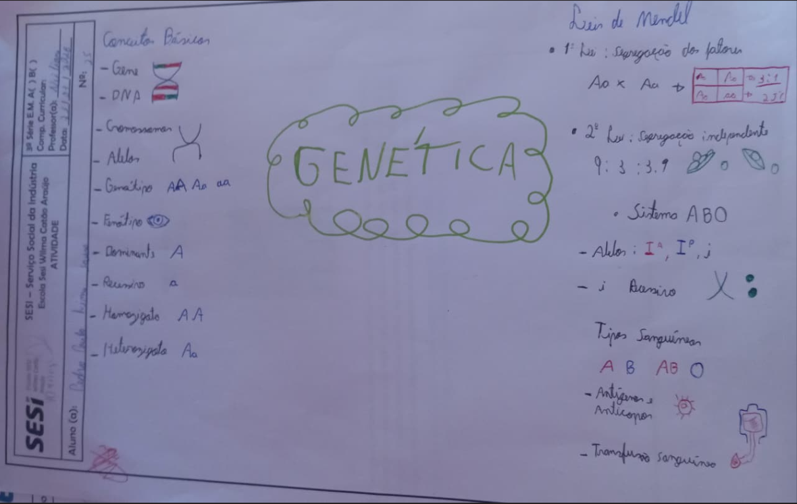
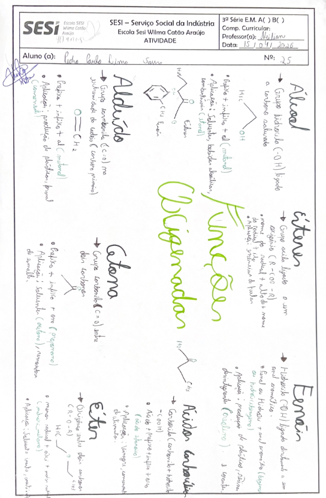
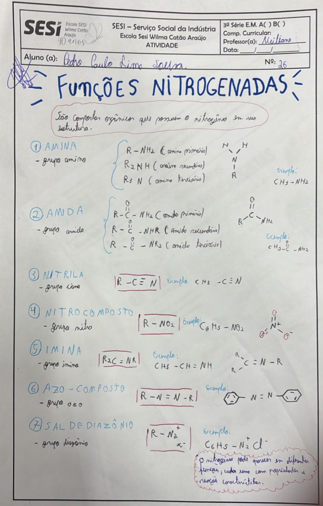
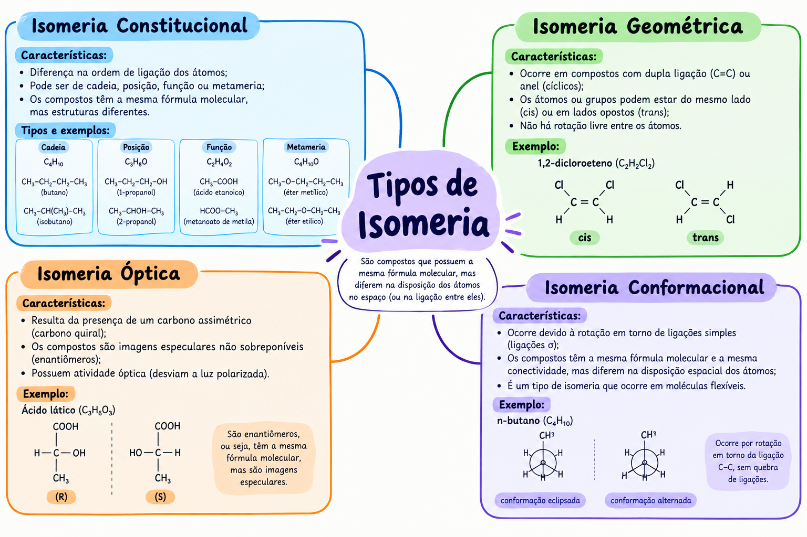
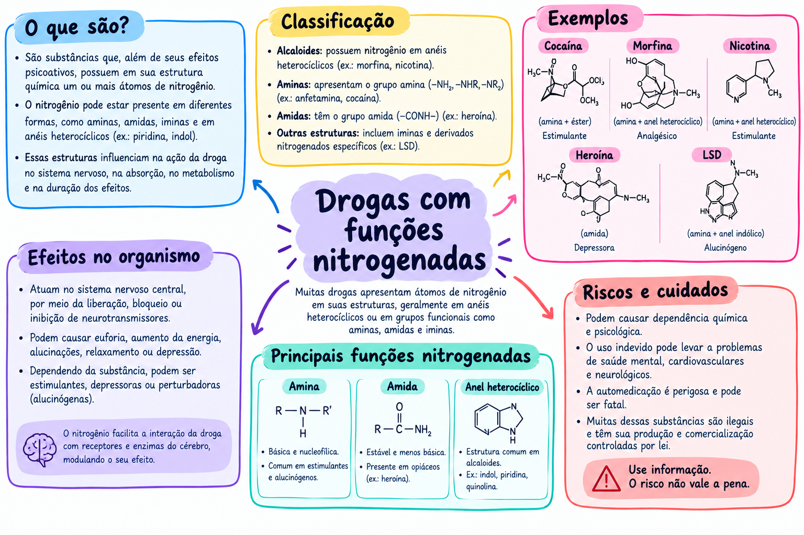

EIXO I

Atividade em mapa mental abordando o assunto das cadeias carbônicas
Data: 28/01/2026
Professora: Neiliane
Descrição: Estudo sobre as cadeias carbônicas.

Atividade em mapa mental abordando o assunto de mitose e meiose
Data: 11/02/2026
Professora: Neiliane
Descrição: Estudo sobre a mitose e meiose.

Atividade em mapa mental abordando o assunto de vetores
Data: 11/02/2026
Professor: Wallace
Descrição: Outra descrição da atividade.

Atividade em mapa mental abordando o assunto das Leis de OHM
Data: 11/02/2026
Professor: Wallace
Descrição: Outra descrição da atividade.

Atividade no tinkercard
Data: 11/02/2026
Professor: Wallace
Descrição: Atividade no tinkercard mostrando a lei de ohm na prática.

Apresentação sobre as doenças causadas por agrotóxicos
Data: 11/02/2026
Professora: Neiliane
Descrição: Apresentação das doenças causadas por agrotóxicos que pode ajudar nos estudos para a prova.

Atividade em mapa mental abordando o assunto de Genética
Data: 26/03/2026
Professora: Neiliane
Descrição: Mapa mental sobre genética para estudar para a prova.
EIXO II

Mapa mental identificando as principais funções oxigenadas.
Data: 15/04/2026
Professora: Neiliane
Descrição: Mapa mental identificando as principais funções oxigenadas, sua aplicação e a nomenclatura de cada uma.

Mapa mental identificando as principais funções nitrogenadas.
Data: 06/05/2026
Professora: Neiliane
Descrição: Mapa mental identificando as principais funções nitrogenadas e os grupos funcionais.

Mapa mental sobre as principais teorias evolucionistas.
Data: 06/05/2026
Professora: Neiliane
Descrição: Mapa mental sobre as principais teorias evolucionistas, ótimo para estudar a fundo as teorias de como surgiu a vida na terra.

Apresentação sobre a História do Pensamento Evolutivo.
Data: 21/05/2026
Professora: Neiliane
Descrição: A apresentação foi importante porque relembrou e explicou como surgiram as teorias evolutivas, ajudando a entender melhor a evolução e suas transformações ao longo do tempo.
EIXO III

Gás Natural
Data: 05/08/2026
Professora: Neiliane
Descrição: Construção de painéis sobre fontes de energia: petróleo, carvão mineral, gás natural, xisto e biocombustíveis.

Isomeria
Data: 10/09/2026
Professora: Neiliane
Descrição: Mapa mental sobre isomeria

Drogas com funções Nitrogenadas
Data: 16/09/2026
Professora: Neiliane
Descrição: Pesquisa e desenvolvimento de um mapa mental sobre drogas com funções nitrogenadas.
EIXO IV
Nome da atividade